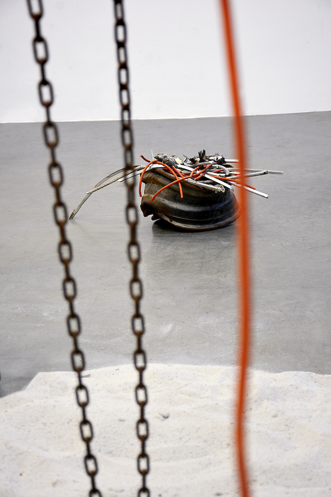
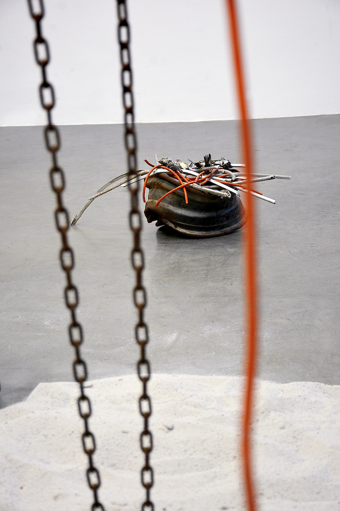

(performance still) Chain hoist, contact microphone, crushed
automotive wheel rim, floating dock section, water, sand, amplifier,
guitar effect pedal, assorted preserved birds, old gas can, extension
cords and aluminum strips. Dimensions variable.
2021
A contact mic embedded chainfall is used to pull a crushed wheel from an unknown vehicle out of a basin, becoming the resting place for six dead birds. After excavating them from a rectangular patch of sand, each one is venerated with a short noise (mimicking the bird’s call) before being placed in the nest.